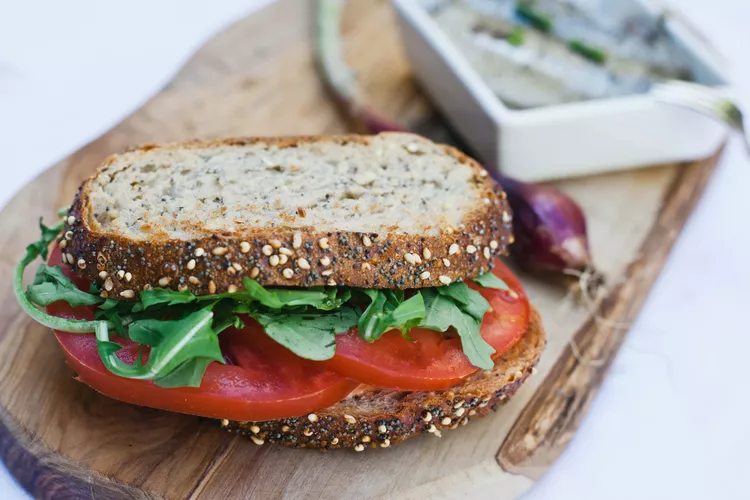

Tomato Sandwich

Description
Crunchy warm toast, fresh juicy tomatoes, and a tangy creamy sauce with some pep. What is not to love?
Ingredients
- 2 tablespoons ketchup
- 1 tablespoon mayonnaise
- 1/8th teaspoon salt
- 1/8th teaspoon hot pepper sauce
- 4 slices whole wheat bread
- 2 slices lettuce
- 1 tomato, sliced
Directions
- Mix together ketchup, mayo, salt and hot sauce in a bowl
- Toast bread, spread the sauce on all four slices
- Place lettuce on piece of toast, top with 3-4 slices of tomato, cover with another toast slice. Repeat for the other sandwich.
References
Recipe submitted by Elaine Lau to Allrecipes
Image by Allrecipes Member